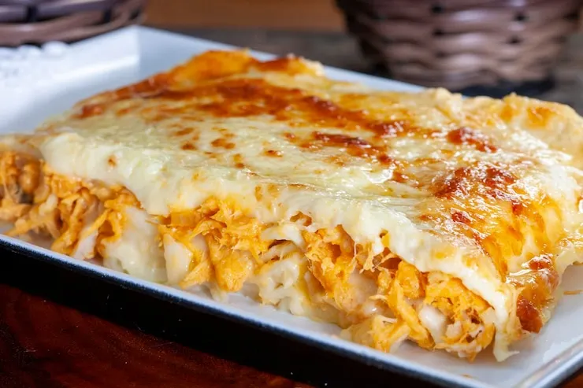
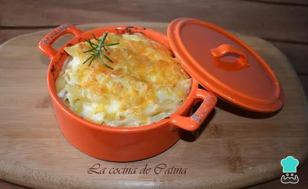

Os tempos de preparo são aproximados e podem variar
conforme o fogão e os utensílios utilizados.
Lasanha de Frango

Lasanha perfeita para encontros familiares
Tempo aproximado:
60 min.
Rendimento estimado: 8 porções.
3 de 5
Ingredientes
400 gramas de massa de lasanha pronta.
400 gramas de presunto fatiado ou ralado.
400 gramas de queijo muçarela fatiado ou ralado.
5 fatias de salame.
2 tomates maduros.
1 cebola média.
1 peito de frango picado.
1 envelope de molho de tomate pronto com manjericão.
2 colheres de sopa de extrato de tomate.
1 maço de cheiro-verde.
1 cubo de caldo de galinha.
500 mililitros de água.
1 fio de óleo.
Sal a gosto.
Pimenta-do-reino a gosto, opcional.
Espinafre fresco a gosto, opcional.
Modo de preparo
Pique o peito de frango em pedaços pequenos.
Pique também os tomates, a cebola e o cheiro-verde.
Aqueça um fio de óleo em uma panela.
Acrescente o frango e refogue até começar a dourar.
Adicione os tomates, a cebola e o cheiro-verde.
Misture e deixe cozinhar por 2 a 3 minutos.
Se desejar, acrescente pimenta-do-reino.
Adicione o caldo de galinha, o extrato de tomate
e o molho pronto. Misture e cozinhe por mais 2 minutos.
Acrescente a água e deixe ferver por aproximadamente
10 minutos, até o frango estar completamente cozido.
Prove o molho antes de ajustar o sal.
Desligue o fogo e reserve.
Confira na embalagem se a massa exige pré-cozimento
e prepare-a conforme as instruções do fabricante.
Cubra o fundo de um refratário próprio para forno
com um pouco do molho de frango.
Monte camadas de massa, molho com frango, presunto
e queijo. Distribua as fatias de salame entre as camadas.
Se desejar, acrescente espinafre fresco higienizado.
Repita as camadas até acomodar os ingredientes,
deixando espaço até a borda do refratário.
Mantenha a massa em contato com o molho
e finalize com molho e uma camada generosa de queijo.
Cubra com papel-alumínio e leve ao forno preaquecido
entre 230 e 250 °C por aproximadamente 25 minutos,
respeitando as orientações da embalagem da massa.
Retire o papel-alumínio nos últimos 5 minutos
para dourar o queijo. Confira se a massa está macia
e o recheio bem quente antes de retirar do forno.
Deixe descansar por alguns minutos antes de cortar
e servir.
Preciso cozinhar a massa antes de montar?
Depende do tipo de massa. Algumas podem ir diretamente
ao forno com o molho, enquanto outras precisam
de pré-cozimento. Confira as instruções da embalagem.
Atualização da receita
A orientação de
adicionar uma pitada de sal ao molho
foi ajustada para
provar o molho antes de acrescentar sal,
pois o caldo de galinha, o presunto e o queijo
já contêm sal.
Macarrão ao molho 3 queijos

Macarrão cremoso ao molho 3 queijos
Tempo aproximado:
40 min, incluindo o gratinado.
Rendimento estimado: 4 porções.
2 de 5
Ingredientes
400 gramas de macarrão de sua preferência.
50 gramas de queijo emmental ralado.
50 gramas de queijo parmesão ralado.
50 gramas de queijo gouda ralado.
500 mililitros de leite.
1 colher de sopa de farinha de trigo ou amido de milho.
1 colher de sopa de manteiga.
1 pitada de noz-moscada.
Sal a gosto, para a água do macarrão e para ajustar o molho.
1 pitada de pimenta-do-reino.
Manteiga adicional para untar, caso queira gratinar.
Modo de preparo
Aqueça uma panela com água e sal até ferver.
Acrescente o macarrão e cozinhe pelo tempo indicado
na embalagem, até ficar al dente, ou seja,
cozido, mas ainda firme ao morder.
Enquanto o macarrão cozinha, prepare o molho branco.
Se usar farinha de trigo, derreta a manteiga em outra
panela, acrescente a farinha e misture por aproximadamente
1 minuto em fogo baixo.
Adicione o leite aos poucos, mexendo bem para dissolver
a mistura e evitar grumos. Se optar pelo amido de milho,
dissolva-o primeiro em parte do leite ainda frio
e depois coloque na panela com a manteiga derretida
e o restante do leite.
Acrescente a noz-moscada e a pimenta-do-reino.
Cozinhe em fogo baixo, mexendo sempre,
até o molho engrossar.
Desligue o fogo e acrescente os queijos emmental,
parmesão e gouda. Misture até derreterem.
Se quiser gratinar, reserve um pouco de cada queijo
para colocar por cima.
Prove o molho e ajuste o sal somente se necessário,
pois os queijos já contêm sal.
Escorra o macarrão e misture ao molho,
envolvendo toda a massa. Você já pode servir
ou seguir para a etapa de gratinar.
Para gratinar, transfira o macarrão para um refratário
próprio para forno untado com manteiga
e distribua os queijos reservados por cima.
Leve ao forno preaquecido a 200 °C por aproximadamente
10 a 15 minutos, ou até dourar levemente.
O tempo pode variar conforme o forno.
Retire com cuidado e sirva.
Se desejar, acompanhe com salada de repolho
e cenoura ou legumes cozidos.
Qual tipo de macarrão combina melhor com esse molho?
Penne e parafuso são boas opções, pois seus formatos
ajudam a reter o molho. Você também pode usar
outro tipo de macarrão de sua preferência.
Preciso levar o macarrão ao forno?
Não. Você pode servir assim que misturar o macarrão
ao molho. O forno é opcional e serve para gratinar
o queijo da superfície.
Atualização da receita
Para manter o preparo de acordo com a lista de ingredientes,
a sugestão de usar
parmesão, muçarela e gorgonzola
foi substituída por
emmental, parmesão e gouda.